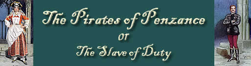

|
 |
||||||
The Era (London, England), Saturday, December 3, 1881; Issue 2254.
NEW THEATRE ROYAL, PARK-ROW. — Managers, Messrs. George and James Mcready Chute. — On Monday D'Oyly Carte's capital company, with The Pirates of Penzance, commenced a return visit, and attracted a large audience, who judging from the liberal applause bestowed and encores demanded, were highly delighted with Messrs. Gilbert and Sullivan's witty and tuneful opera.
Miss Madge Stavart, who now plays Ruth, vice Miss A. Roche, met with a gratifying welcome, and after the song of "The Piratical Maid-of-all-work," was most warmly applauded. Mr. David Fisher, jun., was as quietly funny as ever as Major-General Stanley; and Mr. G. Coventry, though suffering from hoarseness, repeated his very capital performance of Frederick. The Sergeant of Police is still in the capable hands of Mr. George Marler, whose unaffected and musician-like rendering of the quaint music allotted to the man of unhappy lot called forth great applause. Miss Laura Clement sang charmingly as Mabel, and was, of course, encored in the waltz "Poor Wandering One." Miss Millie Vere and Miss Kate Husk were strong in the small parts of Edith and Kate; and Mr. W. T. Helmsley was a good representative of Samuel. Mr. G. W. Marnock was painstaking as the Pirate King. The chorus was in every way excellent.
Page modified 31 October 2011